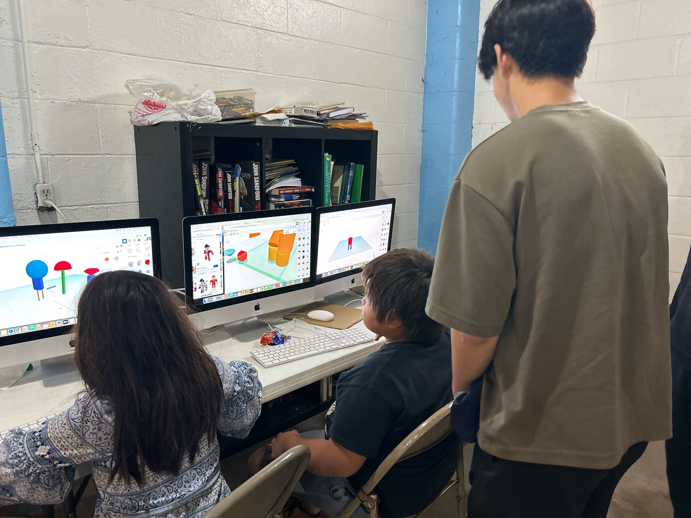
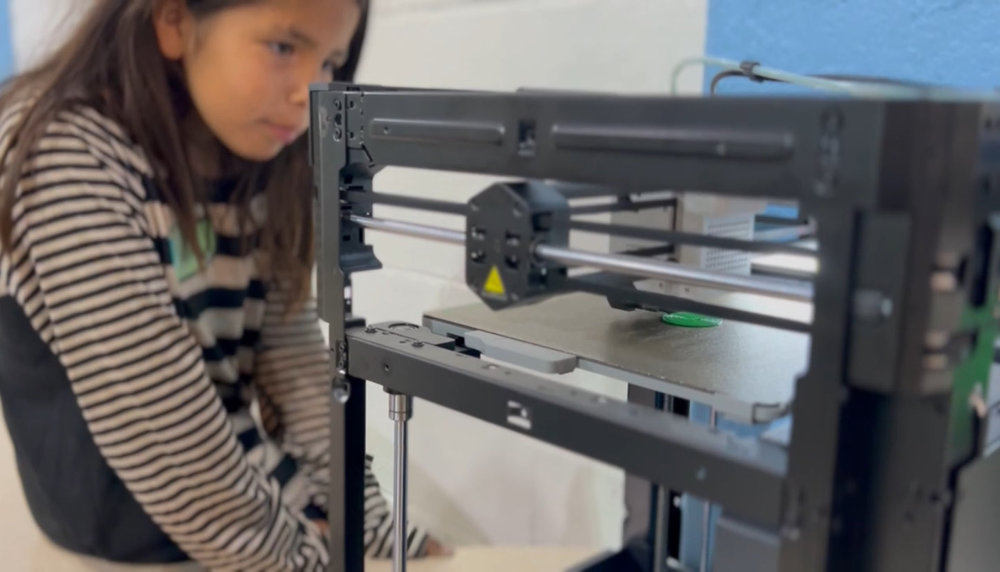
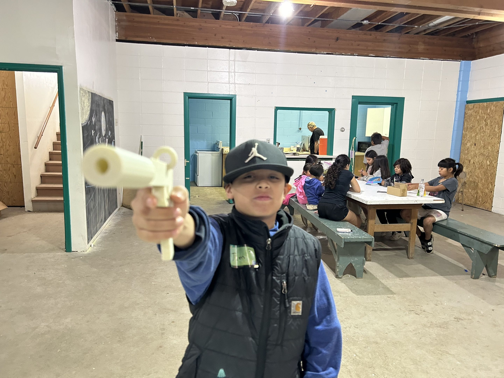
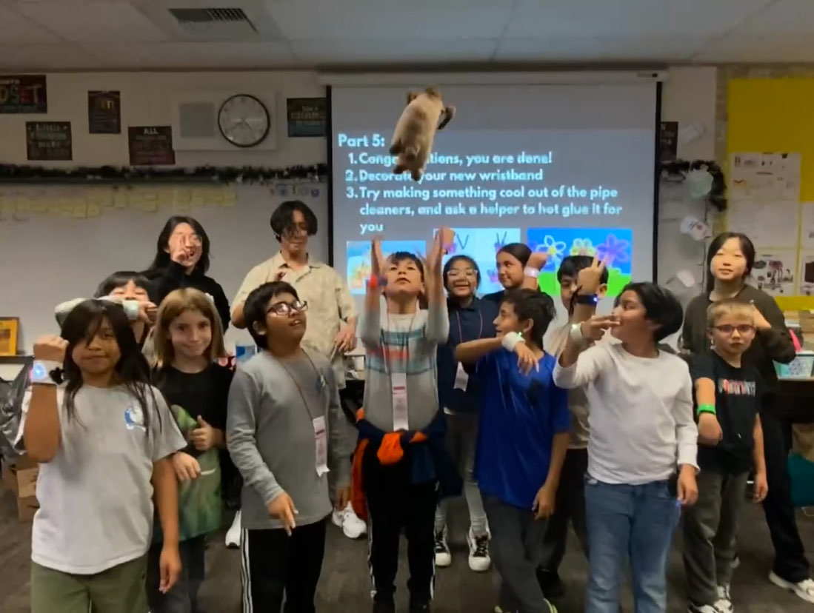
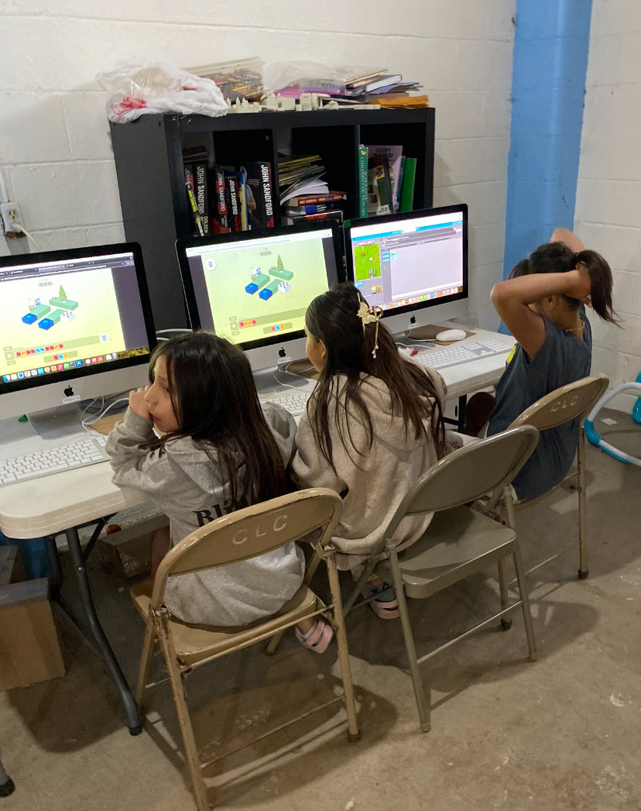
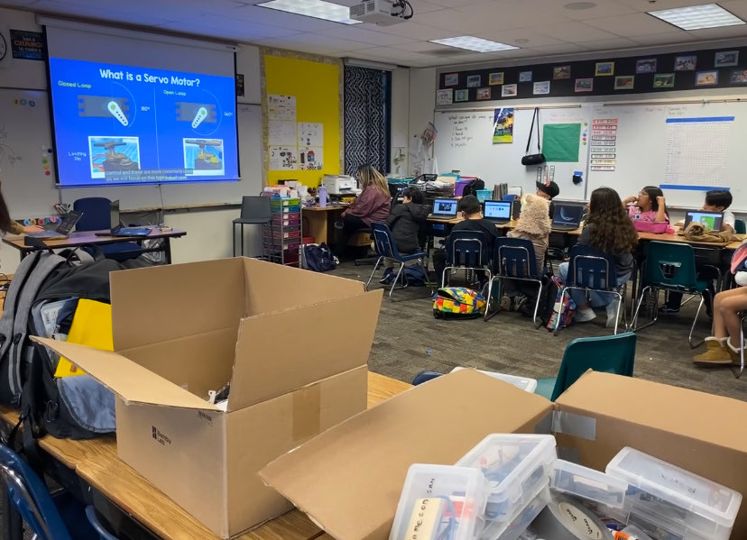
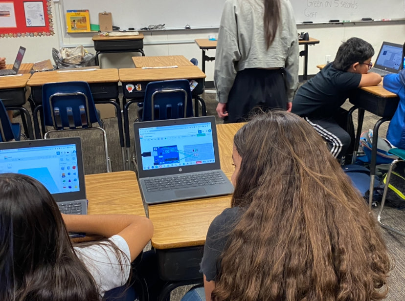
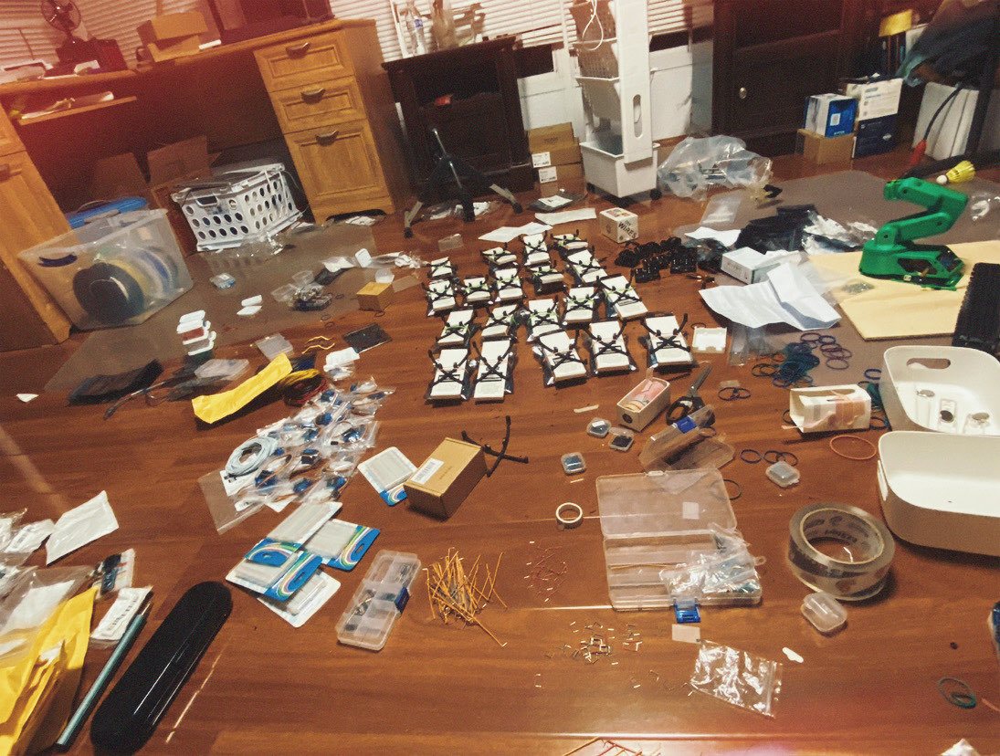
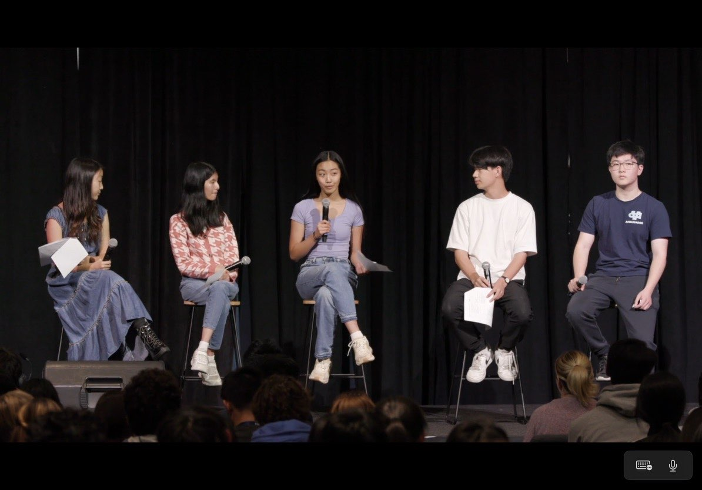
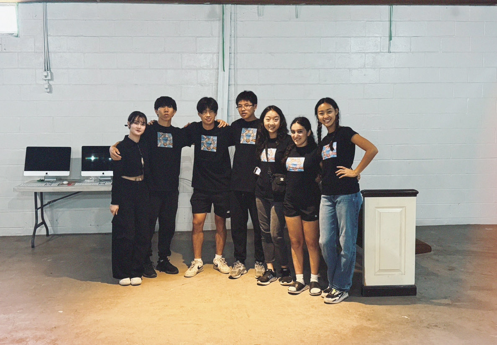

solo-designing a robot as a high school senior new to engineering
The FIRST Robotics Competition game of 2025 was just announced. The wind was howling outside, the thunder booming — just kidding this is California, the weather was perfect and it wasn't even below 70 degrees.
Anyways, this project is something that is very dear to me, because it is not only my first fully personal project, it was also a $8,000 125 lbs. beast that bent poles and almost got disqualified for puncturing game pieces on the field (AKA, it was cool af). It was still one of my first exposures to engineering, I only learned CAD the semester before, and it was time to put my self-taught skills to the test.
I don't have the time to fully document it right now, instead, here's part of a video that I made in the past for a school project that included snippets of the process. I designed all the hardware, ordered all the parts, and enlisted some amazing friends to help me during assembly. In total, in my senior year, I've designed 100+ sheet metal parts, 7 fully custom gearboxes, as well as mechanisms like chain-run cascading elevators, four-bar parallel linkages, and so much more. I learned all these things, while building up a robotics community and leading many STEM exposure programs inside and outside my neighborhood.









